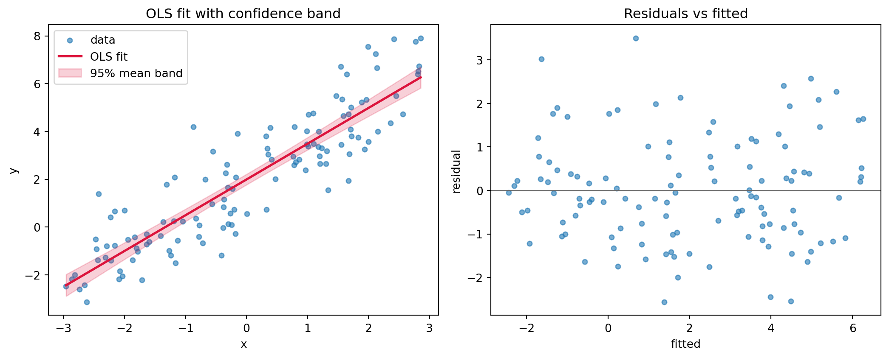

Regression is the workhorse of applied statistics and the conceptual ancestor of much of modern machine learning. At its core, regression asks a simple question: how does the expected value of a response variable change as we vary one or more explanatory variables? The answer, when we restrict ourselves to linear models, turns out to be remarkably elegant. It admits a closed form solution, a clean geometric interpretation, and a rich theory of inference that tells us how much to trust the numbers we compute. This chapter develops that theory from the ground up, moving from the simple two variable case to the full multivariate model, and closing with a bridge to the generalized linear models that extend regression far beyond the Gaussian world.
39.1 1. Simple Linear Regression
39.1.1 1.1 The Model
Suppose we observe \(n\) paired measurements \((x_1, y_1), \dots, (x_n, y_n)\) and we posit that the response \(y\) depends on the predictor \(x\) through a straight line plus random noise:
\[
y_i = \beta_0 + \beta_1 x_i + \varepsilon_i, \qquad i = 1, \dots, n.
\]
Here \(\beta_0\) is the intercept, \(\beta_1\) is the slope, and \(\varepsilon_i\) is an unobserved error term capturing everything the line fails to explain. The quantities \(\beta_0\) and \(\beta_1\) are fixed but unknown population parameters. Our task is to estimate them from data and to quantify our uncertainty about those estimates.
It helps to separate two ideas. The deterministic part \(\beta_0 + \beta_1 x_i\) is the conditional mean \(\mathbb{E}[y_i \mid x_i]\), the systematic signal. The stochastic part \(\varepsilon_i\) is the irreducible scatter around that mean. A common framing assumes \(\mathbb{E}[\varepsilon_i] = 0\) and \(\text{Var}(\varepsilon_i) = \sigma^2\), so the line passes through the average response at each value of \(x\).
39.1.2 1.2 Least Squares Estimation
To fit the line we need a criterion for what makes a fit good. The least squares principle, introduced by Legendre and Gauss in the early nineteenth century, chooses the coefficients that minimize the sum of squared vertical distances between the observed responses and the fitted line:
Squaring serves two purposes. It penalizes large residuals more than small ones, and it produces a smooth objective whose derivatives are easy to handle. To find the minimizer we take the partial derivatives and set them to zero. Differentiating \(S\) with respect to the intercept gives
These two conditions are the simple-case normal equations. The first says the residuals sum to zero; the second says they are uncorrelated with \(x\). Dividing the first by \(n\) gives \(\bar{y} = \beta_0 + \beta_1 \bar{x}\), so \(\hat{\beta}_0 = \bar{y} - \hat{\beta}_1 \bar{x}\). Substituting this back into the second condition and collecting terms yields the familiar estimators:
The slope is the sample covariance of \(x\) and \(y\) divided by the sample variance of \(x\). The intercept then forces the fitted line through the point of means \((\bar{x}, \bar{y})\). These two facts capture the entire geometry of the simple case: the line balances on the centroid of the data and tilts according to how the two variables co-vary.
39.2 2. Multiple Linear Regression
39.2.1 2.1 Matrix Formulation
Real problems rarely involve a single predictor. With \(p\) explanatory variables the model becomes
Writing this out for all \(n\) observations invites a compact matrix notation. Collect the responses into a vector \(\mathbf{y} \in \mathbb{R}^n\), the coefficients into \(\boldsymbol{\beta} \in \mathbb{R}^{p+1}\), and the predictors into a design matrix \(\mathbf{X} \in \mathbb{R}^{n \times (p+1)}\) whose first column is all ones (to carry the intercept) and whose remaining columns hold the predictor values. The model collapses to
This single line subsumes the simple case as the special instance \(p = 1\). The elegance of the matrix view is that everything we derive now holds for any number of predictors without rewriting the algebra.
where the two cross terms coincide because \(\boldsymbol{\beta}^\top \mathbf{X}^\top \mathbf{y}\) is a scalar and equals its own transpose. Using the matrix calculus identities \(\nabla_{\boldsymbol{\beta}} (\mathbf{a}^\top \boldsymbol{\beta}) = \mathbf{a}\) and \(\nabla_{\boldsymbol{\beta}} (\boldsymbol{\beta}^\top \mathbf{A} \boldsymbol{\beta}) = (\mathbf{A} + \mathbf{A}^\top) \boldsymbol{\beta} = 2 \mathbf{A} \boldsymbol{\beta}\) for symmetric \(\mathbf{A} = \mathbf{X}^\top \mathbf{X}\), the gradient is
The Hessian is \(\nabla^2_{\boldsymbol{\beta}} S = 2 \mathbf{X}^\top \mathbf{X}\), which is positive semidefinite for any \(\mathbf{X}\) and positive definite under full column rank, so the stationary point is a global minimum rather than a saddle or maximum. When \(\mathbf{X}\) has full column rank, the matrix \(\mathbf{X}^\top \mathbf{X}\) is invertible and the solution is unique:
In practice one never forms this inverse explicitly. Inverting \(\mathbf{X}^\top \mathbf{X}\) squares the condition number of \(\mathbf{X}\), which amplifies numerical error. Stable implementations factor the design matrix directly, typically with a QR decomposition or a singular value decomposition.
# Conceptual fit. Real libraries use QR or SVD, not the explicit inverse.import numpy as npbeta_hat, *_ = np.linalg.lstsq(X, y, rcond=None) # solves min ||X beta - y||^2
39.2.3 2.3 The Geometric View
The normal equations have a beautiful geometric reading that complements the algebra, and in fact they can be derived from scratch this second way, with no calculus at all. The fitted values \(\hat{\mathbf{y}} = \mathbf{X} \hat{\boldsymbol{\beta}}\) live in the column space \(\mathcal{C}(\mathbf{X})\), the subspace of \(\mathbb{R}^n\) spanned by the predictors. Least squares finds the point in that subspace closest to \(\mathbf{y}\) in Euclidean distance. That closest point is precisely the orthogonal projection of \(\mathbf{y}\) onto the column space.
Derivation by projection. The defining property of an orthogonal projection is that the error vector \(\mathbf{y} - \hat{\mathbf{y}}\) is orthogonal to the subspace it is projected onto. The vector from any point in \(\mathcal{C}(\mathbf{X})\) to \(\mathbf{y}\) is longest when not perpendicular, so the minimizer must leave a residual orthogonal to every column of \(\mathbf{X}\):
Rearranging gives \(\mathbf{X}^\top \mathbf{X} \hat{\boldsymbol{\beta}} = \mathbf{X}^\top \mathbf{y}\), the very same normal equations. The two routes meet: what calculus reaches by setting a gradient to zero, geometry reaches by demanding orthogonality. The equivalence is not a coincidence. The gradient \(\nabla_{\boldsymbol{\beta}} S = -2 \mathbf{X}^\top (\mathbf{y} - \mathbf{X} \boldsymbol{\beta})\) is, up to the factor \(-2\), exactly the inner product of the residual with the columns of \(\mathbf{X}\), so the vanishing gradient and the orthogonality condition are literally the same statement.
so named because it puts the hat on \(\mathbf{y}\): \(\hat{\mathbf{y}} = \mathbf{H} \mathbf{y}\). The hat matrix is a projection operator, meaning it is symmetric and idempotent (\(\mathbf{H}^2 = \mathbf{H}\)). The residual vector \(\mathbf{e} = \mathbf{y} - \hat{\mathbf{y}} = (\mathbf{I} - \mathbf{H}) \mathbf{y}\) is orthogonal to every column of \(\mathbf{X}\). This orthogonality is exactly what the normal equations express: \(\mathbf{X}^\top \mathbf{e} = \mathbf{0}\).
The geometric picture explains several facts at once. The Pythagorean decomposition \(\| \mathbf{y} \|^2 = \| \hat{\mathbf{y}} \|^2 + \| \mathbf{e} \|^2\) (after centering) is the source of the analysis of variance and the coefficient of determination \(R^2\), which measures the fraction of variance the projection captures. The diagonal entries of \(\mathbf{H}\), called leverages, quantify how much each observation can pull the fitted surface toward itself. Regression, viewed this way, is nothing more than dropping a perpendicular from the data vector onto a subspace.
39.3 3. The Gauss-Markov Assumptions
The least squares estimator is purely computational: it minimizes a sum of squares regardless of whether any probabilistic story holds. To say something about its statistical quality, we need assumptions about the errors. The classical set is named after Gauss and Markov.
Linearity. The conditional mean is linear in the parameters: \(\mathbb{E}[\boldsymbol{\varepsilon}] = \mathbf{0}\), so the model is correctly specified.
Full rank. The design matrix \(\mathbf{X}\) has full column rank, ruling out perfect collinearity among predictors and guaranteeing a unique solution.
Homoscedasticity. The errors share a common variance: \(\text{Var}(\varepsilon_i) = \sigma^2\) for all \(i\).
No autocorrelation. Distinct errors are uncorrelated: \(\text{Cov}(\varepsilon_i, \varepsilon_j) = 0\) for \(i \neq j\).
Assumptions three and four combine into the compact statement \(\text{Var}(\boldsymbol{\varepsilon}) = \sigma^2 \mathbf{I}\). Notice what is absent. We do not assume the errors are normally distributed, and we do not assume the predictors are random or fixed in any particular way beyond full rank.
39.3.1 3.1 The Gauss-Markov Theorem
Under these assumptions the ordinary least squares estimator earns a strong optimality guarantee. The Gauss-Markov theorem states that among all linear unbiased estimators of \(\boldsymbol{\beta}\), the least squares estimator has the smallest variance. In the standard shorthand, OLS is the Best Linear Unbiased Estimator, or BLUE.
To unpack the claim, an estimator is linear if it is a linear function of \(\mathbf{y}\), and unbiased if \(\mathbb{E}[\hat{\boldsymbol{\beta}}] = \boldsymbol{\beta}\). Among the entire class of such estimators, no other achieves a smaller variance for any linear combination of the coefficients. The result is striking because it requires no distributional assumption at all. The optimality is also conditional. If the errors are heteroscedastic or correlated, OLS remains unbiased but loses its efficiency crown to generalized least squares, which reweights observations by the inverse error covariance.
The mean and variance of the estimator follow directly:
The variance formula is the key object for inference. It says that the precision of our estimates depends on the noise level \(\sigma^2\) and on the geometry of the predictors encoded in \((\mathbf{X}^\top \mathbf{X})^{-1}\). Predictors that are nearly collinear inflate this inverse and blur the coefficients.
39.4 4. Inference on Coefficients
39.4.1 4.1 Adding Normality
For hypothesis tests and confidence intervals with exact small sample validity, we add a fifth assumption: the errors are independent and normally distributed, \(\boldsymbol{\varepsilon} \sim \mathcal{N}(\mathbf{0}, \sigma^2 \mathbf{I})\). Because \(\hat{\boldsymbol{\beta}}\) is a linear function of the normal vector \(\mathbf{y}\), it is itself normal:
The error variance \(\sigma^2\) is unknown and must be estimated. The unbiased estimator uses the residual sum of squares divided by the degrees of freedom:
\[
\hat{\sigma}^2 = \frac{\| \mathbf{e} \|^2}{n - p - 1} = \frac{\sum_{i=1}^{n} e_i^2}{n - p - 1}.
\]
The denominator counts observations minus the number of estimated coefficients. We lose \(p + 1\) degrees of freedom because the residuals are constrained to be orthogonal to the \(p + 1\) columns of the design.
39.4.2 4.2 Tests and Intervals
Let \(v_{jj}\) denote the \(j\)th diagonal entry of \((\mathbf{X}^\top \mathbf{X})^{-1}\). The standard error of the \(j\)th coefficient is \(\text{se}(\hat{\beta}_j) = \hat{\sigma} \sqrt{v_{jj}}\). To test the null hypothesis \(H_0: \beta_j = 0\), that is, the predictor has no effect once the others are held fixed, we form the \(t\) statistic:
Under the null this statistic follows a Student \(t\) distribution with \(n - p - 1\) degrees of freedom. A large magnitude signals that the coefficient is unlikely to be zero by chance. The corresponding confidence interval at level \(1 - \alpha\) is
\[
\hat{\beta}_j \pm t_{1 - \alpha/2, \, n - p - 1} \cdot \text{se}(\hat{\beta}_j).
\]
To test several coefficients jointly, or to compare nested models, we use an \(F\) test that contrasts the residual sums of squares of the restricted and full models. The overall \(F\) test of the regression asks whether all slope coefficients are simultaneously zero, providing a global check before we interpret individual terms.
A subtle point deserves emphasis. The \(t\) test for \(\beta_j\) measures the partial effect of predictor \(j\) after adjusting for all the others. When predictors are correlated, a variable can appear insignificant on its own yet matter a great deal jointly, or vice versa. Coefficients in multiple regression are never interpreted in isolation from the rest of the model.
39.5 5. The Bias-Variance Tradeoff
39.5.1 5.1 Decomposing Prediction Error
So far optimality has meant unbiasedness plus minimum variance within the unbiased class. But prediction is a different goal than estimation, and for prediction unbiasedness is not sacred. Consider estimating the response at a new point. The expected squared prediction error decomposes into three pieces:
The third term is the noise floor that no model can beat. The first two are under our control, and they pull in opposite directions. A flexible model with many predictors can drive bias toward zero but at the cost of high variance, since each coefficient is estimated from limited data. A rigid model with few predictors has low variance but risks large bias if it omits relevant structure.
39.5.2 5.2 Shrinkage and Regularization
The Gauss-Markov theorem confines its guarantee to unbiased estimators. By stepping outside that class and accepting a little bias, we can sometimes reduce variance enough to lower the total error. This is the logic of regularization. Ridge regression adds a penalty on the squared coefficient norm:
The penalty parameter \(\lambda \geq 0\) shrinks the coefficients toward zero. The closed form solution \(\hat{\boldsymbol{\beta}}_{\text{ridge}} = (\mathbf{X}^\top \mathbf{X} + \lambda \mathbf{I})^{-1} \mathbf{X}^\top \mathbf{y}\) also stabilizes the matrix inversion when predictors are collinear, since adding \(\lambda \mathbf{I}\) guarantees invertibility. The lasso replaces the squared norm with an absolute value penalty, which additionally drives some coefficients exactly to zero and so performs variable selection. Both methods trade a controlled increase in bias for a worthwhile reduction in variance, and the optimal \(\lambda\) is chosen by cross validation to minimize estimated prediction error. This shrinkage idea is the thread connecting classical regression to the broader machine learning literature, where it reappears under names such as weight decay.
39.6 6. A Bridge to Generalized Linear Models
39.6.1 6.1 When the Gaussian Story Breaks
Linear regression assumes a continuous response with additive Gaussian noise and a mean that can range over the entire real line. Many responses violate these assumptions outright. A binary outcome takes only the values zero and one. A count of events is a non-negative integer. A waiting time is positive and right-skewed. Forcing a straight line through such data can produce nonsensical predictions, such as probabilities above one or negative counts.
39.6.2 6.2 The GLM Framework
Generalized linear models, introduced by Nelder and Wedderburn in 1972, extend regression by relaxing two assumptions while preserving its linear backbone. A GLM has three components. First, the response follows a distribution from the exponential family, which includes the normal, Bernoulli, Poisson, gamma, and others. Second, a linear predictor \(\eta_i = \mathbf{x}_i^\top \boldsymbol{\beta}\) retains the familiar linear combination of features. Third, a link function \(g\) connects the mean of the response to the linear predictor:
The link function is the crucial new ingredient. It maps the constrained mean onto the unconstrained real line so the linear predictor can roam freely. For logistic regression, used with binary responses, the link is the logit \(g(\mu) = \log \frac{\mu}{1 - \mu}\), which turns a probability into log odds. For Poisson regression, used with counts, the link is the logarithm \(g(\mu) = \log \mu\), which keeps predicted rates positive. Ordinary linear regression is itself a GLM, the special case with a normal response and the identity link.
Estimation no longer admits a closed form because the likelihood is generally nonlinear in \(\boldsymbol{\beta}\). Instead we maximize the likelihood numerically, typically with iteratively reweighted least squares, an algorithm that solves a weighted least squares problem at each step and so reuses the entire machinery developed above. The geometry of projection, the role of the design matrix, and the structure of inference all carry over in modified form. In this sense the linear model is not a dead end but a launching point, and the projection-and-inference toolkit of this chapter underwrites a vast family of methods that stretch from logistic classifiers to the survival models of biostatistics.
39.7 7. Fitting and Inference in Code
The derivations above stay abstract until we watch the algebra produce numbers. The example below fits a one-predictor model three ways and checks them against each other. The Python cell is executable: it generates data from a known line, solves the normal equations from scratch with a stable linear solve (never an explicit inverse), forms the coefficient covariance \(\hat{\sigma}^2 (\mathbf{X}^\top \mathbf{X})^{-1}\), computes standard errors and \(t\) statistics by hand, and then confirms every figure against statsmodels to a tight tolerance. It closes by drawing the fitted line with a \(95\%\) confidence band for the mean response and a residuals-versus-fitted diagnostic. The Julia and Rust tabs reimplement the from-scratch fit to show that the normal equations are a handful of lines in any language.
import numpy as npimport matplotlib.pyplot as pltimport statsmodels.api as smfrom scipy import statsrng = np.random.default_rng(42)# Synthetic data from a known line: intercept 2.0, slope 1.5.n =120beta_true = np.array([2.0, 1.5])x = rng.uniform(-3.0, 3.0, size=n)X = np.column_stack([np.ones(n), x])y = X @ beta_true + rng.normal(0.0, 1.2, size=n)# OLS from scratch via the normal equations (solve, not inverse).beta_hat = np.linalg.solve(X.T @ X, X.T @ y)# Residual variance and the coefficient covariance sigma^2 (X'X)^-1.resid = y - X @ beta_hatdof = n - X.shape[1]sigma2_hat = resid @ resid / dofcov_beta = sigma2_hat * np.linalg.inv(X.T @ X)se_beta = np.sqrt(np.diag(cov_beta))t_stats = beta_hat / se_betap_vals =2.0* stats.t.sf(np.abs(t_stats), df=dof)print("beta_hat :", np.round(beta_hat, 4))print("standard errors :", np.round(se_beta, 4))print("t statistics :", np.round(t_stats, 3))print("p values :", np.round(p_vals, 6))# Cross check against statsmodels.model = sm.OLS(y, X).fit()assert np.allclose(beta_hat, model.params, atol=1e-8)assert np.allclose(se_beta, model.bse, atol=1e-6)print("scratch vs statsmodels agree; R^2 =", round(model.rsquared, 4))# Confidence band for the mean response: se = sqrt(x0' cov_beta x0).xs = np.linspace(x.min(), x.max(), 200)X0 = np.column_stack([np.ones_like(xs), xs])y_fit = X0 @ beta_hatse_mean = np.sqrt(np.einsum("ij,jk,ik->i", X0, cov_beta, X0))tcrit = stats.t.ppf(0.975, df=dof)fig, (ax1, ax2) = plt.subplots(1, 2, figsize=(11, 4.5))ax1.scatter(x, y, s=18, alpha=0.6, label="data")ax1.plot(xs, y_fit, color="crimson", lw=2, label="OLS fit")ax1.fill_between(xs, y_fit - tcrit * se_mean, y_fit + tcrit * se_mean, color="crimson", alpha=0.2, label="95% mean band")ax1.set_xlabel("x"); ax1.set_ylabel("y")ax1.set_title("OLS fit with confidence band")ax1.legend(loc="upper left")ax2.scatter(X @ beta_hat, resid, s=18, alpha=0.6)ax2.axhline(0.0, color="0.4", lw=1)ax2.set_xlabel("fitted"); ax2.set_ylabel("residual")ax2.set_title("Residuals vs fitted")fig.tight_layout()plt.show()
beta_hat : [1.9892 1.4972]
standard errors : [0.1113 0.0681]
t statistics : [17.869 21.998]
p values : [0. 0.]
scratch vs statsmodels agree; R^2 = 0.804

Figure 39.1: OLS fit with a 95% confidence band for the mean and a residuals-versus-fitted diagnostic.
usingLinearAlgebra, Random, StatisticsRandom.seed!(42)# Synthetic data from a known line: intercept 2.0, slope 1.5.n =120x =6.0.*rand(n) .-3.0X =hcat(ones(n), x)y = X * [2.0, 1.5] .+1.2.*randn(n)# OLS from scratch via the normal equations (solve, not inverse).beta_hat = (X'* X) \ (X'* y)# Residual variance, coefficient covariance, standard errors, t statistics.resid = y .- X * beta_hatdof = n -size(X, 2)sigma2_hat =dot(resid, resid) / dofcov_beta = sigma2_hat .*inv(X'* X)se_beta =sqrt.(diag(cov_beta))t_stats = beta_hat ./ se_betaprintln("beta_hat : ", round.(beta_hat, digits=4))println("standard errors : ", round.(se_beta, digits=4))println("t statistics : ", round.(t_stats, digits=3))
// Illustrative 2-coefficient OLS via the closed-form normal equations.// y = b0 + b1 x; solve the 2x2 system X'X b = X'y by hand.fn main() {let x = [(-2.1,-0.9), (0.4,2.7), (1.8,4.6), (2.9,6.2), (-1.3,0.1)];let n = x.len() asf64;let sx:f64= x.iter().map(|p| p.0).sum();let sy:f64= x.iter().map(|p| p.1).sum();let sxx:f64= x.iter().map(|p| p.0* p.0).sum();let sxy:f64= x.iter().map(|p| p.0* p.1).sum();// Cramer's rule on the 2x2 normal equations.let det = n * sxx - sx * sx;let b0 = (sy * sxx - sx * sxy) / det;let b1 = (n * sxy - sx * sy) / det;println!("intercept b0 = {:.4}", b0);println!("slope b1 = {:.4}", b1);}
39.8 References
Stigler, S. M. (1981). Gauss and the Invention of Least Squares. The Annals of Statistics, 9(3), 465 to 474. https://doi.org/10.1214/aos/1176345451
Seber, G. A. F., & Lee, A. J. (2003). Linear Regression Analysis (2nd ed.). Hoboken, NJ: Wiley. https://doi.org/10.1002/9780471722199
Draper, N. R., & Smith, H. (1998). Applied Regression Analysis (3rd ed.). New York: Wiley. https://doi.org/10.1002/9781118625590
Hastie, T., Tibshirani, R., & Friedman, J. (2009). The Elements of Statistical Learning: Data Mining, Inference, and Prediction (2nd ed.). New York: Springer. https://doi.org/10.1007/978-0-387-84858-7
James, G., Witten, D., Hastie, T., & Tibshirani, R. (2021). An Introduction to Statistical Learning with Applications in R (2nd ed.). New York: Springer. https://doi.org/10.1007/978-1-0716-1418-1
Nelder, J. A., & Wedderburn, R. W. M. (1972). Generalized Linear Models. Journal of the Royal Statistical Society, Series A, 135(3), 370 to 384. https://doi.org/10.2307/2344614
McCullagh, P., & Nelder, J. A. (1989). Generalized Linear Models (2nd ed.). London: Chapman and Hall. https://doi.org/10.1201/9780203753736
Hoerl, A. E., & Kennard, R. W. (1970). Ridge Regression: Biased Estimation for Nonorthogonal Problems. Technometrics, 12(1), 55 to 67. https://doi.org/10.1080/00401706.1970.10488634
Tibshirani, R. (1996). Regression Shrinkage and Selection via the Lasso. Journal of the Royal Statistical Society, Series B, 58(1), 267 to 288. https://doi.org/10.1111/j.2517-6161.1996.tb02080.x
Aitken, A. C. (1936). On Least Squares and Linear Combination of Observations. Proceedings of the Royal Society of Edinburgh, 55, 42 to 48. https://doi.org/10.1017/S0370164600014346
Source Code
# Regression AnalysisRegression is the workhorse of applied statistics and the conceptual ancestor of much of modern machine learning. At its core, regression asks a simple question: how does the expected value of a response variable change as we vary one or more explanatory variables? The answer, when we restrict ourselves to linear models, turns out to be remarkably elegant. It admits a closed form solution, a clean geometric interpretation, and a rich theory of inference that tells us how much to trust the numbers we compute. This chapter develops that theory from the ground up, moving from the simple two variable case to the full multivariate model, and closing with a bridge to the generalized linear models that extend regression far beyond the Gaussian world.## 1. Simple Linear Regression### 1.1 The ModelSuppose we observe $n$ paired measurements $(x_1, y_1), \dots, (x_n, y_n)$ and we posit that the response $y$ depends on the predictor $x$ through a straight line plus random noise:$$y_i = \beta_0 + \beta_1 x_i + \varepsilon_i, \qquad i = 1, \dots, n.$$Here $\beta_0$ is the intercept, $\beta_1$ is the slope, and $\varepsilon_i$ is an unobserved error term capturing everything the line fails to explain. The quantities $\beta_0$ and $\beta_1$ are fixed but unknown population parameters. Our task is to estimate them from data and to quantify our uncertainty about those estimates.It helps to separate two ideas. The deterministic part $\beta_0 + \beta_1 x_i$ is the conditional mean $\mathbb{E}[y_i \mid x_i]$, the systematic signal. The stochastic part $\varepsilon_i$ is the irreducible scatter around that mean. A common framing assumes $\mathbb{E}[\varepsilon_i] = 0$ and $\text{Var}(\varepsilon_i) = \sigma^2$, so the line passes through the average response at each value of $x$.### 1.2 Least Squares EstimationTo fit the line we need a criterion for what makes a fit good. The least squares principle, introduced by Legendre and Gauss in the early nineteenth century, chooses the coefficients that minimize the sum of squared vertical distances between the observed responses and the fitted line:$$S(\beta_0, \beta_1) = \sum_{i=1}^{n} \left( y_i - \beta_0 - \beta_1 x_i \right)^2.$$Squaring serves two purposes. It penalizes large residuals more than small ones, and it produces a smooth objective whose derivatives are easy to handle. To find the minimizer we take the partial derivatives and set them to zero. Differentiating $S$ with respect to the intercept gives$$\frac{\partial S}{\partial \beta_0} = -2 \sum_{i=1}^{n} \left( y_i - \beta_0 - \beta_1 x_i \right) = 0,$$and with respect to the slope,$$\frac{\partial S}{\partial \beta_1} = -2 \sum_{i=1}^{n} x_i \left( y_i - \beta_0 - \beta_1 x_i \right) = 0.$$These two conditions are the simple-case normal equations. The first says the residuals sum to zero; the second says they are uncorrelated with $x$. Dividing the first by $n$ gives $\bar{y} = \beta_0 + \beta_1 \bar{x}$, so $\hat{\beta}_0 = \bar{y} - \hat{\beta}_1 \bar{x}$. Substituting this back into the second condition and collecting terms yields the familiar estimators:$$\hat{\beta}_1 = \frac{\sum_{i=1}^{n} (x_i - \bar{x})(y_i - \bar{y})}{\sum_{i=1}^{n} (x_i - \bar{x})^2}, \qquad \hat{\beta}_0 = \bar{y} - \hat{\beta}_1 \bar{x}.$$The slope is the sample covariance of $x$ and $y$ divided by the sample variance of $x$. The intercept then forces the fitted line through the point of means $(\bar{x}, \bar{y})$. These two facts capture the entire geometry of the simple case: the line balances on the centroid of the data and tilts according to how the two variables co-vary.## 2. Multiple Linear Regression### 2.1 Matrix FormulationReal problems rarely involve a single predictor. With $p$ explanatory variables the model becomes$$y_i = \beta_0 + \beta_1 x_{i1} + \beta_2 x_{i2} + \cdots + \beta_p x_{ip} + \varepsilon_i.$$Writing this out for all $n$ observations invites a compact matrix notation. Collect the responses into a vector $\mathbf{y} \in \mathbb{R}^n$, the coefficients into $\boldsymbol{\beta} \in \mathbb{R}^{p+1}$, and the predictors into a design matrix $\mathbf{X} \in \mathbb{R}^{n \times (p+1)}$ whose first column is all ones (to carry the intercept) and whose remaining columns hold the predictor values. The model collapses to$$\mathbf{y} = \mathbf{X} \boldsymbol{\beta} + \boldsymbol{\varepsilon}.$$This single line subsumes the simple case as the special instance $p = 1$. The elegance of the matrix view is that everything we derive now holds for any number of predictors without rewriting the algebra.### 2.2 The Normal EquationsThe least squares objective generalizes to$$S(\boldsymbol{\beta}) = \| \mathbf{y} - \mathbf{X} \boldsymbol{\beta} \|^2 = (\mathbf{y} - \mathbf{X} \boldsymbol{\beta})^\top (\mathbf{y} - \mathbf{X} \boldsymbol{\beta}).$$**Derivation by calculus.** Expanding the quadratic form gives$$S(\boldsymbol{\beta}) = \mathbf{y}^\top \mathbf{y} - 2 \boldsymbol{\beta}^\top \mathbf{X}^\top \mathbf{y} + \boldsymbol{\beta}^\top \mathbf{X}^\top \mathbf{X} \boldsymbol{\beta},$$where the two cross terms coincide because $\boldsymbol{\beta}^\top \mathbf{X}^\top \mathbf{y}$ is a scalar and equals its own transpose. Using the matrix calculus identities $\nabla_{\boldsymbol{\beta}} (\mathbf{a}^\top \boldsymbol{\beta}) = \mathbf{a}$ and $\nabla_{\boldsymbol{\beta}} (\boldsymbol{\beta}^\top \mathbf{A} \boldsymbol{\beta}) = (\mathbf{A} + \mathbf{A}^\top) \boldsymbol{\beta} = 2 \mathbf{A} \boldsymbol{\beta}$ for symmetric $\mathbf{A} = \mathbf{X}^\top \mathbf{X}$, the gradient is$$\nabla_{\boldsymbol{\beta}} S = -2 \mathbf{X}^\top \mathbf{y} + 2 \mathbf{X}^\top \mathbf{X} \boldsymbol{\beta}.$$Setting the gradient to zero yields the normal equations:$$\mathbf{X}^\top \mathbf{X} \, \boldsymbol{\beta} = \mathbf{X}^\top \mathbf{y}.$$The Hessian is $\nabla^2_{\boldsymbol{\beta}} S = 2 \mathbf{X}^\top \mathbf{X}$, which is positive semidefinite for any $\mathbf{X}$ and positive definite under full column rank, so the stationary point is a global minimum rather than a saddle or maximum. When $\mathbf{X}$ has full column rank, the matrix $\mathbf{X}^\top \mathbf{X}$ is invertible and the solution is unique:$$\hat{\boldsymbol{\beta}} = (\mathbf{X}^\top \mathbf{X})^{-1} \mathbf{X}^\top \mathbf{y}.$$In practice one never forms this inverse explicitly. Inverting $\mathbf{X}^\top \mathbf{X}$ squares the condition number of $\mathbf{X}$, which amplifies numerical error. Stable implementations factor the design matrix directly, typically with a QR decomposition or a singular value decomposition.```python# Conceptual fit. Real libraries use QR or SVD, not the explicit inverse.import numpy as npbeta_hat, *_ = np.linalg.lstsq(X, y, rcond=None) # solves min ||X beta - y||^2```### 2.3 The Geometric ViewThe normal equations have a beautiful geometric reading that complements the algebra, and in fact they can be derived from scratch this second way, with no calculus at all. The fitted values $\hat{\mathbf{y}} = \mathbf{X} \hat{\boldsymbol{\beta}}$ live in the column space $\mathcal{C}(\mathbf{X})$, the subspace of $\mathbb{R}^n$ spanned by the predictors. Least squares finds the point in that subspace closest to $\mathbf{y}$ in Euclidean distance. That closest point is precisely the orthogonal projection of $\mathbf{y}$ onto the column space.**Derivation by projection.** The defining property of an orthogonal projection is that the error vector $\mathbf{y} - \hat{\mathbf{y}}$ is orthogonal to the subspace it is projected onto. The vector from any point in $\mathcal{C}(\mathbf{X})$ to $\mathbf{y}$ is longest when not perpendicular, so the minimizer must leave a residual orthogonal to every column of $\mathbf{X}$:$$\mathbf{X}^\top (\mathbf{y} - \mathbf{X} \hat{\boldsymbol{\beta}}) = \mathbf{0}.$$Rearranging gives $\mathbf{X}^\top \mathbf{X} \hat{\boldsymbol{\beta}} = \mathbf{X}^\top \mathbf{y}$, the very same normal equations. The two routes meet: what calculus reaches by setting a gradient to zero, geometry reaches by demanding orthogonality. The equivalence is not a coincidence. The gradient $\nabla_{\boldsymbol{\beta}} S = -2 \mathbf{X}^\top (\mathbf{y} - \mathbf{X} \boldsymbol{\beta})$ is, up to the factor $-2$, exactly the inner product of the residual with the columns of $\mathbf{X}$, so the vanishing gradient and the orthogonality condition are literally the same statement.Define the hat matrix$$\mathbf{H} = \mathbf{X} (\mathbf{X}^\top \mathbf{X})^{-1} \mathbf{X}^\top,$$so named because it puts the hat on $\mathbf{y}$: $\hat{\mathbf{y}} = \mathbf{H} \mathbf{y}$. The hat matrix is a projection operator, meaning it is symmetric and idempotent ($\mathbf{H}^2 = \mathbf{H}$). The residual vector $\mathbf{e} = \mathbf{y} - \hat{\mathbf{y}} = (\mathbf{I} - \mathbf{H}) \mathbf{y}$ is orthogonal to every column of $\mathbf{X}$. This orthogonality is exactly what the normal equations express: $\mathbf{X}^\top \mathbf{e} = \mathbf{0}$.The geometric picture explains several facts at once. The Pythagorean decomposition $\| \mathbf{y} \|^2 = \| \hat{\mathbf{y}} \|^2 + \| \mathbf{e} \|^2$ (after centering) is the source of the analysis of variance and the coefficient of determination $R^2$, which measures the fraction of variance the projection captures. The diagonal entries of $\mathbf{H}$, called leverages, quantify how much each observation can pull the fitted surface toward itself. Regression, viewed this way, is nothing more than dropping a perpendicular from the data vector onto a subspace.## 3. The Gauss-Markov AssumptionsThe least squares estimator is purely computational: it minimizes a sum of squares regardless of whether any probabilistic story holds. To say something about its statistical quality, we need assumptions about the errors. The classical set is named after Gauss and Markov.1. **Linearity.** The conditional mean is linear in the parameters: $\mathbb{E}[\boldsymbol{\varepsilon}] = \mathbf{0}$, so the model is correctly specified.2. **Full rank.** The design matrix $\mathbf{X}$ has full column rank, ruling out perfect collinearity among predictors and guaranteeing a unique solution.3. **Homoscedasticity.** The errors share a common variance: $\text{Var}(\varepsilon_i) = \sigma^2$ for all $i$.4. **No autocorrelation.** Distinct errors are uncorrelated: $\text{Cov}(\varepsilon_i, \varepsilon_j) = 0$ for $i \neq j$.Assumptions three and four combine into the compact statement $\text{Var}(\boldsymbol{\varepsilon}) = \sigma^2 \mathbf{I}$. Notice what is absent. We do not assume the errors are normally distributed, and we do not assume the predictors are random or fixed in any particular way beyond full rank.### 3.1 The Gauss-Markov TheoremUnder these assumptions the ordinary least squares estimator earns a strong optimality guarantee. The Gauss-Markov theorem states that among all linear unbiased estimators of $\boldsymbol{\beta}$, the least squares estimator has the smallest variance. In the standard shorthand, OLS is the Best Linear Unbiased Estimator, or BLUE.To unpack the claim, an estimator is linear if it is a linear function of $\mathbf{y}$, and unbiased if $\mathbb{E}[\hat{\boldsymbol{\beta}}] = \boldsymbol{\beta}$. Among the entire class of such estimators, no other achieves a smaller variance for any linear combination of the coefficients. The result is striking because it requires no distributional assumption at all. The optimality is also conditional. If the errors are heteroscedastic or correlated, OLS remains unbiased but loses its efficiency crown to generalized least squares, which reweights observations by the inverse error covariance.The mean and variance of the estimator follow directly:$$\mathbb{E}[\hat{\boldsymbol{\beta}}] = \boldsymbol{\beta}, \qquad \text{Var}(\hat{\boldsymbol{\beta}}) = \sigma^2 (\mathbf{X}^\top \mathbf{X})^{-1}.$$The variance formula is the key object for inference. It says that the precision of our estimates depends on the noise level $\sigma^2$ and on the geometry of the predictors encoded in $(\mathbf{X}^\top \mathbf{X})^{-1}$. Predictors that are nearly collinear inflate this inverse and blur the coefficients.## 4. Inference on Coefficients### 4.1 Adding NormalityFor hypothesis tests and confidence intervals with exact small sample validity, we add a fifth assumption: the errors are independent and normally distributed, $\boldsymbol{\varepsilon} \sim \mathcal{N}(\mathbf{0}, \sigma^2 \mathbf{I})$. Because $\hat{\boldsymbol{\beta}}$ is a linear function of the normal vector $\mathbf{y}$, it is itself normal:$$\hat{\boldsymbol{\beta}} \sim \mathcal{N}\left( \boldsymbol{\beta}, \, \sigma^2 (\mathbf{X}^\top \mathbf{X})^{-1} \right).$$The error variance $\sigma^2$ is unknown and must be estimated. The unbiased estimator uses the residual sum of squares divided by the degrees of freedom:$$\hat{\sigma}^2 = \frac{\| \mathbf{e} \|^2}{n - p - 1} = \frac{\sum_{i=1}^{n} e_i^2}{n - p - 1}.$$The denominator counts observations minus the number of estimated coefficients. We lose $p + 1$ degrees of freedom because the residuals are constrained to be orthogonal to the $p + 1$ columns of the design.### 4.2 Tests and IntervalsLet $v_{jj}$ denote the $j$th diagonal entry of $(\mathbf{X}^\top \mathbf{X})^{-1}$. The standard error of the $j$th coefficient is $\text{se}(\hat{\beta}_j) = \hat{\sigma} \sqrt{v_{jj}}$. To test the null hypothesis $H_0: \beta_j = 0$, that is, the predictor has no effect once the others are held fixed, we form the $t$ statistic:$$t_j = \frac{\hat{\beta}_j}{\text{se}(\hat{\beta}_j)}.$$Under the null this statistic follows a Student $t$ distribution with $n - p - 1$ degrees of freedom. A large magnitude signals that the coefficient is unlikely to be zero by chance. The corresponding confidence interval at level $1 - \alpha$ is$$\hat{\beta}_j \pm t_{1 - \alpha/2, \, n - p - 1} \cdot \text{se}(\hat{\beta}_j).$$To test several coefficients jointly, or to compare nested models, we use an $F$ test that contrasts the residual sums of squares of the restricted and full models. The overall $F$ test of the regression asks whether all slope coefficients are simultaneously zero, providing a global check before we interpret individual terms.A subtle point deserves emphasis. The $t$ test for $\beta_j$ measures the partial effect of predictor $j$ after adjusting for all the others. When predictors are correlated, a variable can appear insignificant on its own yet matter a great deal jointly, or vice versa. Coefficients in multiple regression are never interpreted in isolation from the rest of the model.## 5. The Bias-Variance Tradeoff### 5.1 Decomposing Prediction ErrorSo far optimality has meant unbiasedness plus minimum variance within the unbiased class. But prediction is a different goal than estimation, and for prediction unbiasedness is not sacred. Consider estimating the response at a new point. The expected squared prediction error decomposes into three pieces:$$\mathbb{E}\left[ (y_0 - \hat{f}(x_0))^2 \right] = \underbrace{\left( \text{Bias}(\hat{f}(x_0)) \right)^2}_{\text{systematic error}} + \underbrace{\text{Var}(\hat{f}(x_0))}_{\text{estimation noise}} + \underbrace{\sigma^2}_{\text{irreducible}}.$$The third term is the noise floor that no model can beat. The first two are under our control, and they pull in opposite directions. A flexible model with many predictors can drive bias toward zero but at the cost of high variance, since each coefficient is estimated from limited data. A rigid model with few predictors has low variance but risks large bias if it omits relevant structure.### 5.2 Shrinkage and RegularizationThe Gauss-Markov theorem confines its guarantee to unbiased estimators. By stepping outside that class and accepting a little bias, we can sometimes reduce variance enough to lower the total error. This is the logic of regularization. Ridge regression adds a penalty on the squared coefficient norm:$$\hat{\boldsymbol{\beta}}_{\text{ridge}} = \arg\min_{\boldsymbol{\beta}} \; \| \mathbf{y} - \mathbf{X} \boldsymbol{\beta} \|^2 + \lambda \| \boldsymbol{\beta} \|^2.$$The penalty parameter $\lambda \geq 0$ shrinks the coefficients toward zero. The closed form solution $\hat{\boldsymbol{\beta}}_{\text{ridge}} = (\mathbf{X}^\top \mathbf{X} + \lambda \mathbf{I})^{-1} \mathbf{X}^\top \mathbf{y}$ also stabilizes the matrix inversion when predictors are collinear, since adding $\lambda \mathbf{I}$ guarantees invertibility. The lasso replaces the squared norm with an absolute value penalty, which additionally drives some coefficients exactly to zero and so performs variable selection. Both methods trade a controlled increase in bias for a worthwhile reduction in variance, and the optimal $\lambda$ is chosen by cross validation to minimize estimated prediction error. This shrinkage idea is the thread connecting classical regression to the broader machine learning literature, where it reappears under names such as weight decay.## 6. A Bridge to Generalized Linear Models### 6.1 When the Gaussian Story BreaksLinear regression assumes a continuous response with additive Gaussian noise and a mean that can range over the entire real line. Many responses violate these assumptions outright. A binary outcome takes only the values zero and one. A count of events is a non-negative integer. A waiting time is positive and right-skewed. Forcing a straight line through such data can produce nonsensical predictions, such as probabilities above one or negative counts.### 6.2 The GLM FrameworkGeneralized linear models, introduced by Nelder and Wedderburn in 1972, extend regression by relaxing two assumptions while preserving its linear backbone. A GLM has three components. First, the response follows a distribution from the exponential family, which includes the normal, Bernoulli, Poisson, gamma, and others. Second, a linear predictor $\eta_i = \mathbf{x}_i^\top \boldsymbol{\beta}$ retains the familiar linear combination of features. Third, a link function $g$ connects the mean of the response to the linear predictor:$$g(\mathbb{E}[y_i]) = \eta_i = \mathbf{x}_i^\top \boldsymbol{\beta}.$$The link function is the crucial new ingredient. It maps the constrained mean onto the unconstrained real line so the linear predictor can roam freely. For logistic regression, used with binary responses, the link is the logit $g(\mu) = \log \frac{\mu}{1 - \mu}$, which turns a probability into log odds. For Poisson regression, used with counts, the link is the logarithm $g(\mu) = \log \mu$, which keeps predicted rates positive. Ordinary linear regression is itself a GLM, the special case with a normal response and the identity link.Estimation no longer admits a closed form because the likelihood is generally nonlinear in $\boldsymbol{\beta}$. Instead we maximize the likelihood numerically, typically with iteratively reweighted least squares, an algorithm that solves a weighted least squares problem at each step and so reuses the entire machinery developed above. The geometry of projection, the role of the design matrix, and the structure of inference all carry over in modified form. In this sense the linear model is not a dead end but a launching point, and the projection-and-inference toolkit of this chapter underwrites a vast family of methods that stretch from logistic classifiers to the survival models of biostatistics.## 7. Fitting and Inference in CodeThe derivations above stay abstract until we watch the algebra produce numbers. The example below fits a one-predictor model three ways and checks them against each other. The Python cell is executable: it generates data from a known line, solves the normal equations from scratch with a stable linear solve (never an explicit inverse), forms the coefficient covariance $\hat{\sigma}^2 (\mathbf{X}^\top \mathbf{X})^{-1}$, computes standard errors and $t$ statistics by hand, and then confirms every figure against `statsmodels` to a tight tolerance. It closes by drawing the fitted line with a $95\%$ confidence band for the mean response and a residuals-versus-fitted diagnostic. The Julia and Rust tabs reimplement the from-scratch fit to show that the normal equations are a handful of lines in any language.::: {.panel-tabset}## Python```{python}#| label: fig-ols-fit#| fig-cap: "OLS fit with a 95% confidence band for the mean and a residuals-versus-fitted diagnostic."import numpy as npimport matplotlib.pyplot as pltimport statsmodels.api as smfrom scipy import statsrng = np.random.default_rng(42)# Synthetic data from a known line: intercept 2.0, slope 1.5.n =120beta_true = np.array([2.0, 1.5])x = rng.uniform(-3.0, 3.0, size=n)X = np.column_stack([np.ones(n), x])y = X @ beta_true + rng.normal(0.0, 1.2, size=n)# OLS from scratch via the normal equations (solve, not inverse).beta_hat = np.linalg.solve(X.T @ X, X.T @ y)# Residual variance and the coefficient covariance sigma^2 (X'X)^-1.resid = y - X @ beta_hatdof = n - X.shape[1]sigma2_hat = resid @ resid / dofcov_beta = sigma2_hat * np.linalg.inv(X.T @ X)se_beta = np.sqrt(np.diag(cov_beta))t_stats = beta_hat / se_betap_vals =2.0* stats.t.sf(np.abs(t_stats), df=dof)print("beta_hat :", np.round(beta_hat, 4))print("standard errors :", np.round(se_beta, 4))print("t statistics :", np.round(t_stats, 3))print("p values :", np.round(p_vals, 6))# Cross check against statsmodels.model = sm.OLS(y, X).fit()assert np.allclose(beta_hat, model.params, atol=1e-8)assert np.allclose(se_beta, model.bse, atol=1e-6)print("scratch vs statsmodels agree; R^2 =", round(model.rsquared, 4))# Confidence band for the mean response: se = sqrt(x0' cov_beta x0).xs = np.linspace(x.min(), x.max(), 200)X0 = np.column_stack([np.ones_like(xs), xs])y_fit = X0 @ beta_hatse_mean = np.sqrt(np.einsum("ij,jk,ik->i", X0, cov_beta, X0))tcrit = stats.t.ppf(0.975, df=dof)fig, (ax1, ax2) = plt.subplots(1, 2, figsize=(11, 4.5))ax1.scatter(x, y, s=18, alpha=0.6, label="data")ax1.plot(xs, y_fit, color="crimson", lw=2, label="OLS fit")ax1.fill_between(xs, y_fit - tcrit * se_mean, y_fit + tcrit * se_mean, color="crimson", alpha=0.2, label="95% mean band")ax1.set_xlabel("x"); ax1.set_ylabel("y")ax1.set_title("OLS fit with confidence band")ax1.legend(loc="upper left")ax2.scatter(X @ beta_hat, resid, s=18, alpha=0.6)ax2.axhline(0.0, color="0.4", lw=1)ax2.set_xlabel("fitted"); ax2.set_ylabel("residual")ax2.set_title("Residuals vs fitted")fig.tight_layout()plt.show()```## Julia```juliausingLinearAlgebra, Random, StatisticsRandom.seed!(42)# Synthetic data from a known line: intercept 2.0, slope 1.5.n =120x =6.0.*rand(n) .-3.0X =hcat(ones(n), x)y = X * [2.0, 1.5] .+1.2.*randn(n)# OLS from scratch via the normal equations (solve, not inverse).beta_hat = (X'* X) \ (X'* y)# Residual variance, coefficient covariance, standard errors, t statistics.resid = y .- X * beta_hatdof = n -size(X, 2)sigma2_hat =dot(resid, resid) / dofcov_beta = sigma2_hat .*inv(X'* X)se_beta =sqrt.(diag(cov_beta))t_stats = beta_hat ./ se_betaprintln("beta_hat : ", round.(beta_hat, digits=4))println("standard errors : ", round.(se_beta, digits=4))println("t statistics : ", round.(t_stats, digits=3))```## Rust```rust// Illustrative 2-coefficient OLS via the closed-form normal equations.// y = b0 + b1 x; solve the 2x2 system X'X b = X'y by hand.fn main() { let x = [(-2.1, -0.9), (0.4, 2.7), (1.8, 4.6), (2.9, 6.2), (-1.3, 0.1)]; let n =x.len() as f64; let sx: f64 =x.iter().map(|p| p.0).sum(); let sy: f64 =x.iter().map(|p| p.1).sum(); let sxx: f64 =x.iter().map(|p| p.0* p.0).sum(); let sxy: f64 =x.iter().map(|p| p.0* p.1).sum();// Cramer's rule on the 2x2 normal equations. let det = n * sxx - sx * sx; let b0 = (sy * sxx - sx * sxy) / det; let b1 = (n * sxy - sx * sy) / det; println!("intercept b0 = {:.4}", b0); println!("slope b1 = {:.4}", b1);}```:::## References1. Stigler, S. M. (1981). Gauss and the Invention of Least Squares. *The Annals of Statistics*, 9(3), 465 to 474. https://doi.org/10.1214/aos/11763454512. Seber, G. A. F., & Lee, A. J. (2003). *Linear Regression Analysis* (2nd ed.). Hoboken, NJ: Wiley. https://doi.org/10.1002/97804717221993. Draper, N. R., & Smith, H. (1998). *Applied Regression Analysis* (3rd ed.). New York: Wiley. https://doi.org/10.1002/97811186255904. Hastie, T., Tibshirani, R., & Friedman, J. (2009). *The Elements of Statistical Learning: Data Mining, Inference, and Prediction* (2nd ed.). New York: Springer. https://doi.org/10.1007/978-0-387-84858-75. James, G., Witten, D., Hastie, T., & Tibshirani, R. (2021). *An Introduction to Statistical Learning with Applications in R* (2nd ed.). New York: Springer. https://doi.org/10.1007/978-1-0716-1418-16. Nelder, J. A., & Wedderburn, R. W. M. (1972). Generalized Linear Models. *Journal of the Royal Statistical Society, Series A*, 135(3), 370 to 384. https://doi.org/10.2307/23446147. McCullagh, P., & Nelder, J. A. (1989). *Generalized Linear Models* (2nd ed.). London: Chapman and Hall. https://doi.org/10.1201/97802037537368. Hoerl, A. E., & Kennard, R. W. (1970). Ridge Regression: Biased Estimation for Nonorthogonal Problems. *Technometrics*, 12(1), 55 to 67. https://doi.org/10.1080/00401706.1970.104886349. Tibshirani, R. (1996). Regression Shrinkage and Selection via the Lasso. *Journal of the Royal Statistical Society, Series B*, 58(1), 267 to 288. https://doi.org/10.1111/j.2517-6161.1996.tb02080.x10. Aitken, A. C. (1936). On Least Squares and Linear Combination of Observations. *Proceedings of the Royal Society of Edinburgh*, 55, 42 to 48. https://doi.org/10.1017/S0370164600014346